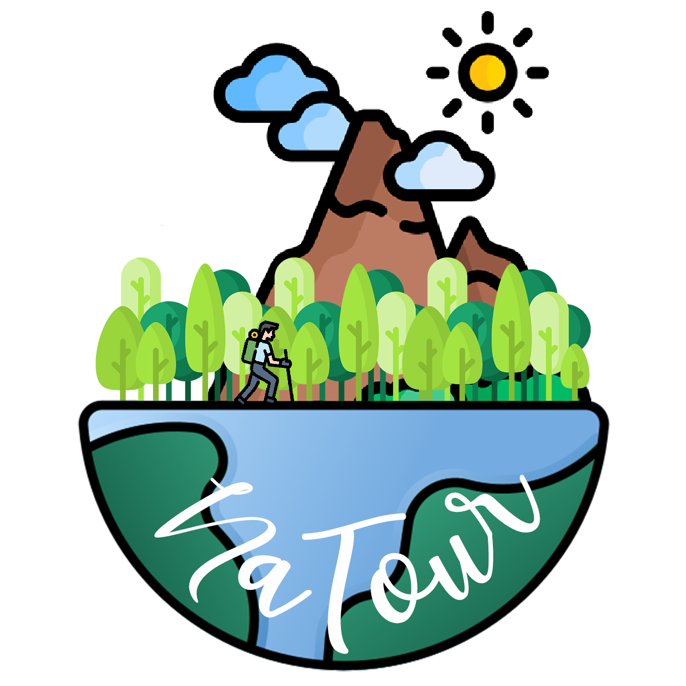

NaTour
(Un nuovo modo per fare trekking)
Valentino Bocchetti - Mario Carofano

La nostra idea di NaTour
NaTour © nasce come prodotto di quanto appreso e studiato durante il corso di Ingegneria del Software nel AA. 2021-2022.
Su NaTour
Se vi piacciono l’escursionismo e l’aria aperta, NaTour è l’app che fa per voi!
Il progetto si concretizza in 2 applicativi mobile (al momento offriamo solo un client android), offrendo:
Un'applicazione per gli appassionati di trekking che, una volta registrati, avranno a disposizione un social network per condividere le loro escursioni con la community;
Un'applicazione per gli admin che, una volta loggati,
- Avranno a disposizione un modo di informarsi sulle statistiche di utilizzo dei servizi messi a disposizione degli utenti;
- Una vista e una (futura) gestione delle segnalazioni che gli utenti, possono effettuare, con lo scopo ultimo di proteggere gli utenti da foto dal contenuto inappropriato.
Per registrarsi
Gli utenti hanno la possibilità di registrarsi:
- Utilizzando una semplice mail;
- Accedendo con un account Google;
Gli admin, invece, avranno a disposizione delle credenziali autogenerate dal sistema.
Servizi offerti
Una volta registrati gli utenti avranno la possibilità di:
- Creare un itinerario, con la possibilità di un inserimento manuale dell'itinerario, potendo fare uso di file in formato
GPX; - Visualizzare gli itinerari presenti sulla piattaforma sulla HomePage;
- Visualizzare la mappa del singolo itinerario, sia mediante la visualizzazione testuale delle informazioni dell'itinerario, sia mediante una mappa interattiva;
- Un servizio di chatting rapido, con cui un utente ha la possibiltà di poter chiedere informazioni su un percorso creato da un altro Natourer.
Tecnologie utilizzate
Con lo scopo di rendere sempre affidabile e sicura la piattaforma si è scelto di mettere in campo tutte le tecnologie conosciute durante le nostre esperienze lavorative. In particolare abbiamo fatto uso di:
- Cloud services, offerto dal noto service provider AWS, di proprietà Amazon Inc., per la gestione dei dati degli utenti e admin iscritti alla piattaforma e delle immagini inerenti agli itinerari
- La gestione di tutti questi servizi è gestito attraverso il framework Amplify
- Il noto framework Spring Boot, che offre una soluzione convention over configuration per il framework Spring di Java, che è stata preferita ad una gestione manuale che non offre web service come Apache Tomcat, necessari al corretto funzionamento della piattaforma;
- Container docker, per la gestione dei dati affidabile nel tempo, che offre una soluzione plug & play svincolata dall'hardware utilizzato.
Una soluzione di questo tipo è stata possibile anche grazie all'utilizzo di un file configurazione che ci ha permesso in pochi secondi di spostarci da un ambiente di testing (in locale) al deploy di una versione release del nostro prodotto.
Di seguito riportiamo una versione leggermente semplificata di quello che abbiamo fatto per ottenere il risultato voluto:
version: '3'
services:
database:
image: 'postgres:latest'
container_name: 'pg_db'
volumes:
- ./db-data/:/var/lib/postgresql/data/
ports:
- 5432:5432
environment:
POSTGRES_USER: username
POSTGRES_PASSWORD: password
POSTGRES_DB: database
Demo
Di seguito riportiamo una breve demo che mostra in azione NaTour durante il suo utilizzo:
Riferimenti
Chi siamo


Siamo Valentino e Mario, due studenti appassionati di tecnologia ed iscritti al Corso di Laurea in Informatica all'Università Federico II di Napoli.
Con il mondo a portata di mano, Valentino e Mario riescono a trovare il tempo tra gli studi per sviluppare e mostrare le loro applicazioni.
Ringraziamenti
Ringraziamo i professori Franco Cutugno e Sergio di Martino per lo splendido corso, che ci ha permesso di conoscere nuove interessanti tecnologie.
Ringraziamo inoltre anche i dottorandi Luigi Libero Lucio Starace e Marco Grazioso per il supporto offertoci durante e dopo le lezioni